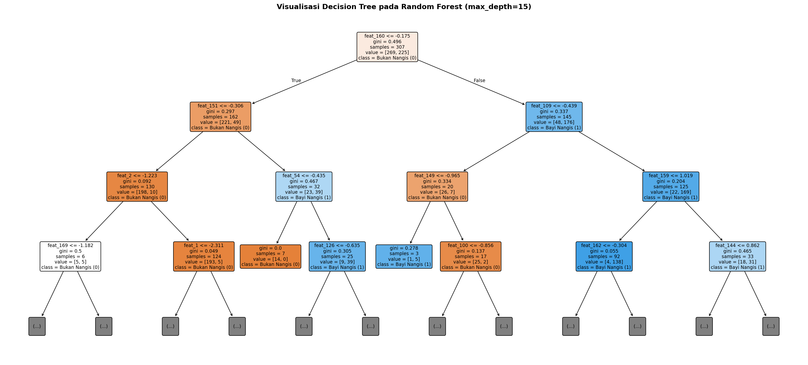
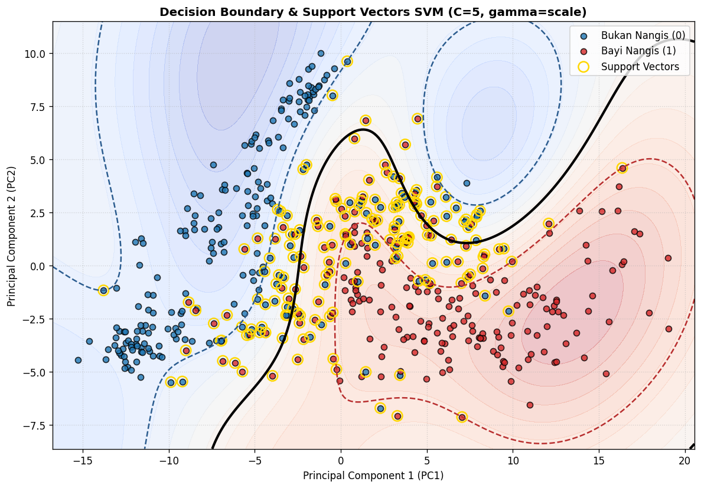
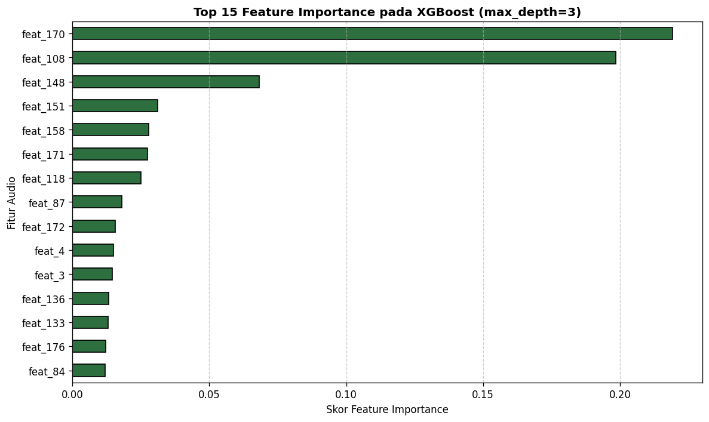
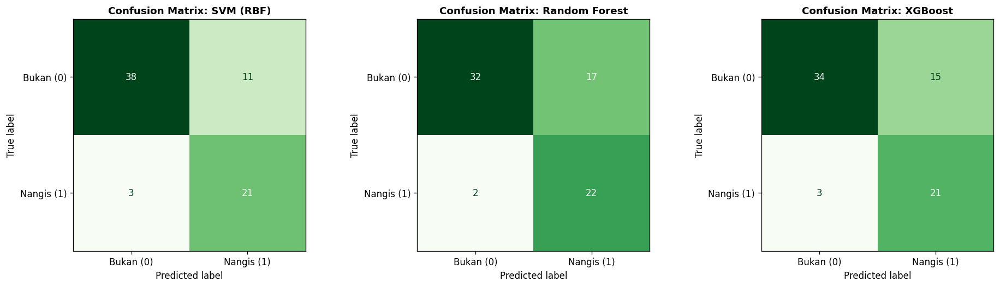

Tugas Klasifikasi#
Business Understanding#
Pengawasan bayi secara terus-menerus merupakan tantangan tersendiri bagi orang tua maupun pengasuh, terutama ketika mereka harus melakukan aktivitas di ruangan yang berbeda atau sedang beristirahat. Tangisan merupakan media komunikasi utama bayi untuk mengindikasikan rasa lapar, ketidaknyamanan, rasa sakit, atau kondisi darurat yang membutuhkan respons cepat. Keterlambatan dalam menyadari tangisan bayi akibat jarak atau kebisingan lingkungan sekitar dapat berisiko terhadap keselamatan dan kenyamanan bayi. Oleh karena itu, dibutuhkan sebuah sistem pemantauan pintar berbasis kecerdasan buatan (Artificial Intelligence) yang mampu mendeteksi suara tangisan bayi secara otomatis dan real-time dari sinyal audio di sekitarnya.
Proyek ini bertujuan untuk membangun dan menentukan model machine learning terbaik dalam mengklasifikasikan suara tangisan bayi (bayi_nangis) dan suara lingkungan sekitar (bukan_nangis) berdasarkan ekstraksi 182 fitur akustik (meliputi MFCC, Delta MFCC, Spectral Centroid, Spectral Rolloff, Spectral Contrast, Zero Crossing Rate, dan RMS Energy). Proses pengembangan dilakukan melalui komparasi tiga algoritma klasifikasi—yaitu Support Vector Machine (SVM), Random Forest, dan XGBoost—dengan mengutamakan metrik F1-Score dan Recall agar sistem meminimalkan risiko terlewatnya deteksi saat bayi benar-benar menangis. Model terbaik yang terpilih dari hasil evaluasi (dalam pengujian ini adalah SVM dengan kernel RBF yang meraih Accuracy 80,82%, Recall 87,50%, dan F1-Score 75,00%) selanjutnya akan diimplementasikan (deployment) ke dalam perangkat lunak berbasis web interaktif menggunakan Streamlit. Sebagai solusi akhir yang aplikatif, aplikasi tersebut diintegrasikan dengan layanan pesan WhatsApp (WA) untuk mengirimkan peringatan atau notifikasi otomatis secara instan kepada orang tua setiap kali model mendeteksi adanya tangisan bayi.
Daftar Library yang Digunakan:
os, glob, re, & warnings: Pustaka bawaan Python untuk manajemen direktori, pencarian pola path file audio (
.mp3dan.wav), manipulasi teks filename untuk pengelompokan data (grouping), serta penyaringan pesan peringatan sistem.NumPy (
numpy): Digunakan untuk komputasi matriks dan operasi numerik berkinerja tinggi, seperti padding sinyal audio, penggabungan vektor fitur, serta kalkulasi nilai rata-rata (mean) dan standar deviasi (std).Pandas (
pandas): Digunakan untuk memanipulasi data tabular, melakukan pembersihan dataset (data cleaning), serta menyimpan dan membaca hasil ekstraksi fitur dalam format.csv.Librosa (
librosa): Pustaka utama pemrosesan sinyal audio yang digunakan untuk membaca file suara, memotong bagian hening (trimming silence), serta mengekstraksi fitur akustik time-domain dan frequency-domain.Audiomentations (
audiomentations): Digunakan untuk melakukan augmentasi data audio (AddGaussianNoise, TimeStretch, dan PitchShift) guna memperkaya variasi data latih dan mencegah overfitting.Tqdm (
tqdm): Digunakan untuk menampilkan indikator bilah progres (progress bar) secara visual saat proses ekstraksi fitur berlangsung.Scikit-Learn (
sklearn): Pustaka utama machine learning yang mencakup modulGroupShuffleSplitdanStratifiedKFold(pembagian data dan validasi silang),StandardScaler(normalisasi skala fitur),SVCdanRandomForestClassifier(algoritma pemodelan),GridSearchCV(pencarian hyperparameter terbaik), sertametrics(evaluasi performa dan pembuatan Confusion Matrix).XGBoost (
xgboost): Pustaka algoritma Extreme Gradient Boosting (XGBClassifier) yang digunakan sebagai salah satu kandidat model klasifikasi pembanding.Joblib (
joblib): Digunakan untuk menyimpan (serialization) objek model terbaik dan scaler ke dalam file.pklagar siap diintegrasikan ke dalam aplikasi Streamlit.Matplotlib (
matplotlib): Digunakan untuk memvisualisasikan grafik perbandingan hasil evaluasi dan menggambar Confusion Matrix dari masing-masing model.Streamlit (
streamlit) & Requests (requests): Digunakan pada tahap deployment untuk membangun antarmuka perangkat lunak web pendeteksi tangisan bayi dan menghubungkan output prediksi model ke API gateway WhatsApp.
Data Understanding#
Dataset yang digunakan dalam proyek klasifikasi suara tangisan bayi ini dikumpulkan dari beberapa sumber repositori terbuka (open-source) untuk memastikan keragaman karakteristik sinyal audio dan kondisi latar belakang suara. Pengumpulan data dibagi ke dalam dua kategori kelas utama, yaitu kelas positif (bayi_nangis dengan label 1) dan kelas negatif (bukan_nangis dengan label 0). Sumber data diperoleh melalui kombinasi tiga platform, yakni Pixabay (platform penyedia sampel audio bebas royalti yang memuat berbagai rekaman suara tangisan bayi berdurasi panjang antara 30 hingga 50 detik), repositori GitHub gveres (donateacry-corpus yang secara spesifik menghimpun rekaman suara tangisan bayi pada berbagai kondisi), serta repositori GitHub karolpiczak (ESC-50: Dataset for Environmental Sound Classification yang menyediakan kumpulan rekaman suara lingkungan berdurasi standar 5 detik sebagai representasi kelas kebisingan sekitar atau suara non-tangisan). Secara keseluruhan, tahap akuisisi data awal menghimpun tepat 200 file audio mentah dalam format .wav dan .mp3, yang terdiri dari 100 file pada direktori dataset_bayi_nangis dan 100 file pada direktori dataset_bayi_tidak_nangis.
Mengingat adanya perbedaan durasi antara file audio dari Pixabay dan standar ESC-50, seluruh sinyal audio diseragamkan menggunakan sample rate sebesar 22.050 Hz (mono) dan dipotong (slicing) menjadi segmen-segmen seragam berdurasi 5 detik (110.250 sampel per potongan) setelah terlebih dahulu melewati proses pemangkasan bagian hening (trimming silence dengan ambang batas top_db=25). Untuk menjaga keseimbangan jumlah sampel antar kelas akibat durasi file tangisan bayi yang panjang, pengambilan potongan pada kelas bayi_nangis dibatasi maksimal 3 chunk per file. Selain itu, diterapkan teknik augmentasi data menggunakan pustaka Audiomentations (meliputi penambahan Gaussian Noise, Time Stretch, dan Pitch Shift) yang menggandakan setiap potongan audio asli guna memperkaya variasi data latih. Dari proses pemotongan dan augmentasi terhadap 200 file audio mentah tersebut, diperoleh dataset tabular awal (fitur_audio_siap_training.csv) sebanyak 764 baris sampel yang terdistribusi secara seimbang, yaitu 388 sampel kelas bayi_nangis dan 376 sampel kelas bukan_nangis.
Setiap baris sampel audio berdurasi 5 detik tersebut selanjutnya direpresentasikan ke dalam 182 kolom fitur numerik (feat_1 hingga feat_182) serta 4 kolom metadata (filename, label, category, dan is_augmented). Ekstraksi fitur dilakukan dengan menghitung nilai rata-rata (mean) dan standar deviasi (standard deviation) sepanjang waktu dari 91 komponen sinyal akustik domain waktu dan domain frekuensi. Komponen tersebut mencakup 40 koefisien Mel-Frequency Cepstral Coefficients (MFCC) beserta 40 Delta MFCC untuk menangkap karakteristik warna suara (timbre) dan dinamika perubahannya, Spectral Centroid dan Spectral Rolloff untuk mengukur pusat gravitasi serta batas distribusi frekuensi tinggi yang khas pada lengkingan tangisan bayi, 7 band Spectral Contrast untuk membedakan puncak harmonik suara dari derau latar (background noise), serta Zero Crossing Rate (ZCR) dan Root Mean Square (RMS) untuk merepresentasikan tingkat kekasaran sinyal dan intensitas energi suara. Berdasarkan hasil pemeriksaan kualitas data awal terhadap ke-764 sampel yang terbentuk, dataset terbukti tidak memiliki nilai kosong (missing values / NaN = 0), tidak mengandung nilai tak hingga (Infinity = 0), tidak memiliki potongan audio hening berenergi nol (zero energy = 0), serta seluruh 182 fitur memiliki variasi nilai yang aktif, namun teridentifikasi adanya sejumlah baris dengan nilai fitur identik (duplikat) yang selanjutnya ditangani pada tahap Data Preparation.
import os
import glob
import warnings
import numpy as np
import pandas as pd
import librosa
from tqdm import tqdm
from audiomentations import Compose, AddGaussianNoise, TimeStretch, PitchShift
warnings.filterwarnings("ignore")
# ================= KONFIGURASI =================
FOLDER_NANGIS = "dataset_bayi_nangis"
FOLDER_TIDAK_NANGIS = "dataset_bayi_tidak_nangis"
OUTPUT_CSV = "fitur_audio_siap_training.csv"
SAMPLE_RATE = 22050
DURATION = 5 # Durasi seragam per sampel (5 detik, mengikuti standar ESC-50)
SAMPLES_PER_CHUNK = SAMPLE_RATE * DURATION
# ===============================================
# Pipeline Augmentasi (Audiomentations)
augmenter = Compose([
AddGaussianNoise(min_amplitude=0.001, max_amplitude=0.012, p=0.5),
TimeStretch(min_rate=0.9, max_rate=1.1, p=0.5),
PitchShift(min_semitones=-2, max_semitones=2, p=0.5),
])
def extract_features(y: np.ndarray, sr: int) -> np.ndarray:
"""
Mengekstrak gabungan fitur terbaik untuk klasifikasi suara (130 dimensi fitur):
- 40 MFCC + 40 Delta MFCC + 40 Delta-Delta MFCC (Mean & Std = 240 fitur atau diringkas)
Di sini kita ambil Mean & Std dari:
40 MFCC, 40 Delta MFCC, Spectral Centroid, Spectral Rolloff, ZCR, RMS, dan 7 band Spectral Contrast
Total = (40 + 40 + 1 + 1 + 1 + 1 + 7) * 2 = 182 fitur numerik presisi tinggi.
"""
# Pastikan panjang sinyal tepat 5 detik (padding jika kurang sedikit)
if len(y) < SAMPLES_PER_CHUNK:
y = np.pad(y, (0, SAMPLES_PER_CHUNK - len(y)), mode="constant")
else:
y = y[:SAMPLES_PER_CHUNK]
# 1. MFCC (40 koefisien) & Delta MFCC
mfcc = librosa.feature.mfcc(y=y, sr=sr, n_mfcc=40)
mfcc_delta = librosa.feature.delta(mfcc)
# 2. Spectral Features (karakteristik frekuensi tangisan bayi sangat kuat di sini)
centroid = librosa.feature.spectral_centroid(y=y, sr=sr)
rolloff = librosa.feature.spectral_rolloff(y=y, sr=sr)
contrast = librosa.feature.spectral_contrast(y=y, sr=sr)
# 3. Time-domain Features
zcr = librosa.feature.zero_crossing_rate(y=y)
rms = librosa.feature.rms(y=y)
# Gabungkan semua matriks fitur
all_features = np.vstack([mfcc, mfcc_delta, centroid, rolloff, contrast, zcr, rms])
# Ambil nilai Rata-rata (Mean) dan Standar Deviasi (Std) sepanjang waktu (axis=1)
feat_mean = np.mean(all_features, axis=1)
feat_std = np.std(all_features, axis=1)
return np.hstack([feat_mean, feat_std])
def load_and_slice_audio(filepath: str, sr: int = SAMPLE_RATE, chunk_samples: int = SAMPLES_PER_CHUNK):
"""
Membaca file .mp3 atau .wav, membuang bagian hening (silence),
dan memotong audio panjang (30-50 dtk) menjadi potongan-potongan 5 detik.
"""
try:
y, _ = librosa.load(filepath, sr=sr, mono=True)
# Buang bagian hening di awal/akhir rekaman
y, _ = librosa.effects.trim(y, top_db=25)
chunks = []
# Jika total durasi file <= 5 detik (seperti ESC-50), ambil sebagai 1 potongan
if len(y) <= chunk_samples:
if len(y) >= sr * 1: # Minimal ada suara 1 detik
chunks.append(y)
else:
# Jika durasi panjang (30-50 detik dari Pixabay), potong per 5 detik
for start in range(0, len(y) - chunk_samples + 1, chunk_samples):
chunk = y[start : start + chunk_samples]
# Pastikan potongan tidak kosong/hening
if np.max(np.abs(chunk)) > 0.01:
chunks.append(chunk)
return chunks
except Exception as e:
print(f"\n[!] Gagal memproses file {filepath}: {e}")
return []
def process_folder(folder_path: str, label: int, label_name: str, apply_augmentation: bool = False, max_chunks_per_file: int = None):
"""Memproses seluruh file .mp3 dan .wav di dalam suatu folder."""
audio_files = []
for ext in ("*.mp3", "*.wav", "*.MP3", "*.WAV"):
audio_files.extend(glob.glob(os.path.join(folder_path, ext)))
# Hilangkan duplikat path di Windows (case-insensitive)
audio_files = list(set(audio_files))
print(f"[*] Memproses '{folder_path}' ({len(audio_files)} file ditemukan) -> Label: {label} ({label_name})")
dataset_rows = []
for filepath in tqdm(audio_files, desc=f"Ekstraksi {label_name}"):
filename = os.path.basename(filepath)
chunks = load_and_slice_audio(filepath)
if max_chunks_per_file:
chunks = chunks[:max_chunks_per_file]
for idx, chunk in enumerate(chunks):
# 1. Ekstrak fitur dari audio asli
feats = extract_features(chunk, SAMPLE_RATE)
row = {
"filename": f"{filename}_chunk{idx+1}",
"label": label,
"category": label_name,
"is_augmented": 0
}
for f_idx, val in enumerate(feats):
row[f"feat_{f_idx+1}"] = val
dataset_rows.append(row)
# 2. Jika diaktifkan, buat 1 sampel variasi augmentasi via Audiomentations
if apply_augmentation:
aug_chunk = augmenter(samples=chunk.astype(np.float32), sample_rate=SAMPLE_RATE)
aug_feats = extract_features(aug_chunk, SAMPLE_RATE)
aug_row = {
"filename": f"{filename}_chunk{idx+1}_aug",
"label": label,
"category": label_name,
"is_augmented": 1
}
for f_idx, val in enumerate(aug_feats):
aug_row[f"feat_{f_idx+1}"] = val
dataset_rows.append(aug_row)
return dataset_rows
def main():
all_data = []
# 1. Proses Kelas Positif: Bayi Nangis (Label = 1)
# Karena 1 file 40 detik menghasilkan ~8 potongan (5 detik), kita batasi misal max 3 potongan per file
# agar jumlah sampelnya seimbang dengan 100 file di dataset_bayi_tidak_nangis
rows_nangis = process_folder(
FOLDER_NANGIS,
label=1,
label_name="bayi_nangis",
apply_augmentation=True,
max_chunks_per_file=3
)
all_data.extend(rows_nangis)
# 2. Proses Kelas Negatif: Bayi Tidak Nangis / ESC-50 (Label = 0)
rows_tidak_nangis = process_folder(
FOLDER_TIDAK_NANGIS,
label=0,
label_name="bukan_nangis",
apply_augmentation=True
)
all_data.extend(rows_tidak_nangis)
# Simpan ke DataFrame & CSV
df = pd.DataFrame(all_data)
df.to_csv(OUTPUT_CSV, index=False)
print("\n=======================================================")
print(f"[*] SELESAI! Dataset fitur tersimpan di: {OUTPUT_CSV}")
print(f"[*] Total Sampel Audio : {len(df)} baris")
print(f"[*] Total Fitur Akustik: {len(df.columns) - 4} kolom fitur")
print("\nDistribusi Kelas:")
print(df["category"].value_counts())
print("=======================================================")
if __name__ == "__main__":
main()
---------------------------------------------------------------------------
ModuleNotFoundError Traceback (most recent call last)
Cell In[1], line 6
4 import numpy as np
5 import pandas as pd
----> 6 import librosa
7 from tqdm import tqdm
8 from audiomentations import Compose, AddGaussianNoise, TimeStretch, PitchShift
ModuleNotFoundError: No module named 'librosa'
import pandas as pd
# Membaca file dataset hasil ekstraksi fitur
df = pd.read_csv("fitur_audio_siap_training.csv")
# Menampilkan jumlah baris dan kolom
baris, kolom = df.shape
print(f"Jumlah Baris (Sampel) : {baris} baris")
print(f"Jumlah Kolom (Total) : {kolom} kolom (4 metadata + {kolom - 4} fitur akustik)\n")
# Menampilkan 5 data teratas
print("5 Data Teratas:")
display(df.head(5))
Jumlah Baris (Sampel) : 764 baris
Jumlah Kolom (Total) : 186 kolom (4 metadata + 182 fitur akustik)
5 Data Teratas:
| filename | label | category | is_augmented | feat_1 | feat_2 | feat_3 | feat_4 | feat_5 | feat_6 | ... | feat_173 | feat_174 | feat_175 | feat_176 | feat_177 | feat_178 | feat_179 | feat_180 | feat_181 | feat_182 | |
|---|---|---|---|---|---|---|---|---|---|---|---|---|---|---|---|---|---|---|---|---|---|
| 0 | 24.wav_chunk1 | 1 | bayi_nangis | 0 | -419.824800 | 199.165347 | -90.177805 | -6.853148 | 16.208232 | -50.141724 | ... | 566.344749 | 5.503326 | 3.968025 | 4.488395 | 4.293285 | 3.033428 | 7.448332 | 2.351041 | 0.044462 | 0.013622 |
| 1 | 24.wav_chunk1_aug | 1 | bayi_nangis | 1 | -419.824800 | 199.165347 | -90.177805 | -6.853148 | 16.208232 | -50.141724 | ... | 566.344749 | 5.503326 | 3.968025 | 4.488395 | 4.293285 | 3.033428 | 7.448332 | 2.351041 | 0.044462 | 0.013622 |
| 2 | 56.wav_chunk1 | 1 | bayi_nangis | 0 | -254.442531 | 160.649869 | -130.892933 | -8.230612 | 34.327706 | -50.977497 | ... | 248.353002 | 4.999999 | 3.804472 | 4.835603 | 4.539876 | 3.807180 | 7.379340 | 3.106681 | 0.043628 | 0.058295 |
| 3 | 56.wav_chunk1_aug | 1 | bayi_nangis | 1 | -329.393995 | 172.625407 | -128.547413 | -23.214840 | 42.652222 | -45.342637 | ... | 162.890911 | 6.156690 | 3.930481 | 4.407745 | 4.044402 | 3.224774 | 7.636454 | 4.477128 | 0.036051 | 0.029180 |
| 4 | 64.wav_chunk1 | 1 | bayi_nangis | 0 | -291.942183 | 152.071685 | -73.727353 | -16.529839 | 15.783799 | -39.370332 | ... | 345.186276 | 5.546844 | 3.833899 | 5.997727 | 5.642513 | 4.095305 | 7.827019 | 3.485003 | 0.025332 | 0.056973 |
5 rows × 186 columns
Berdasarkan output pemeriksaan dimensi dan 5 baris data teratas, dataset hasil ekstraksi (fitur_audio_siap_training.csv) berukuran 764 baris × 186 kolom (4 kolom metadata + 182 kolom fitur akustik).
Berikut adalah tampilan 5 sampel data teratas:
Index |
filename |
label |
category |
is_augmented |
feat_1 |
feat_2 |
feat_3 |
… |
feat_180 |
feat_181 |
feat_182 |
|---|---|---|---|---|---|---|---|---|---|---|---|
0 |
24.wav_chunk1 |
1 |
bayi_nangis |
0 |
-419.8248 |
199.1653 |
-90.1778 |
… |
2.3510 |
0.0445 |
0.0136 |
1 |
24.wav_chunk1_aug |
1 |
bayi_nangis |
1 |
-419.8248 |
199.1653 |
-90.1778 |
… |
2.3510 |
0.0445 |
0.0136 |
2 |
56.wav_chunk1 |
1 |
bayi_nangis |
0 |
-254.4425 |
160.6499 |
-130.8929 |
… |
3.1067 |
0.0436 |
0.0583 |
3 |
56.wav_chunk1_aug |
1 |
bayi_nangis |
1 |
-329.3940 |
172.6254 |
-128.5474 |
… |
4.4771 |
0.0361 |
0.0292 |
4 |
64.wav_chunk1 |
1 |
bayi_nangis |
0 |
-291.9422 |
152.0717 |
-73.7274 |
… |
3.4850 |
0.0253 |
0.0570 |
Adapun rincian asal-usul serta arti dari setiap baris dan kolom pada tabel di atas dirangkum sebagai berikut:
Komponen Dataset |
Asal Perolehan Data |
Representasi / Arti Nilai |
|---|---|---|
764 Baris (Sampel) |
Hasil pemotongan (slicing) 200 file audio asli menjadi potongan 5 detik (maksimal 3 chunk per file untuk kelas |
Setiap 1 baris mewakili 1 potongan suara berdurasi 5 detik (baris audio asli selalu berpasangan dengan baris |
|
Nama file asli dari folder dataset yang diberi imbuhan urutan potongan dan status augmentasi. |
Identitas potongan suara (contoh: |
|
Penamaan otomatis saat pemrosesan masing-masing folder ( |
Target klasifikasi: |
|
Penanda otomatis dari pipeline |
Bernilai |
|
Nilai Rata-rata (Mean) sepanjang 5 detik dari ekstraksi |
Mewakili rata-rata karakteristik suara: MFCC ( |
|
Nilai Standar Deviasi (Std) sepanjang 5 detik dari ekstraksi |
Mewakili tingkat fluktuasi dari 91 komponen akustik dengan urutan yang sama: Std MFCC ( |
Catatan pada baris 0 dan 1 (
24.wav_chunk1&24.wav_chunk1_aug): Nilai fitur keduanya terlihat kembar 100% karena setiap efek di dalamAudiomentationsdiatur dengan peluangp=0.5, sehingga ada sampel yang lolos tanpa terkena efek perubahan suara. Baris duplikat seperti ini otomatis terdeteksi dan dibersihkan pada tahap Data Cleaning.
Pengecekan data#
Tahap ini difokuskan pada validasi dan pembersihan matriks fitur (fitur_audio_siap_training.csv) hasil ekstraksi sinyal audio. Langkah ini dilakukan untuk mengeliminasi anomali numerik maupun redundansi sampel yang berpotensi mengganggu konvergensi algoritma klasifikasi dan memicu bias pada evaluasi model.
Proses pembersihan data mencakup empat pengujian kualitas terhadap 764 sampel dan 182 fitur akustik:
Parameter Pemeriksaan |
Indikator Masalah |
Prosedur Penanganan |
|---|---|---|
Missing Value & Infinity |
Kemunculan nilai |
Konversi nilai |
Silent Chunk (Zero Energy) |
Potongan audio hening yang lolos tahap trimming, ditandai dengan akumulasi nilai absolut seluruh fitur sama dengan nol. |
Eliminasi baris sampel yang memiliki total energi fitur bernilai nol. |
Duplikasi Fitur Identik |
Baris sampel dengan 182 nilai fitur yang identik 100%, umumnya berasal dari sampel |
Penghapusan baris duplikat ( |
Fitur Konstan (Zero Variance) |
Kolom fitur dengan nilai standar deviasi |
Penghapusan kolom fitur yang memiliki variansi nol. |
import numpy as np
import pandas as pd
# Konfigurasi nama file
INPUT_CSV = "fitur_audio_siap_training.csv"
CLEAN_CSV = "fitur_audio_clean.csv"
def cek_dan_bersihkan_dataset():
print(f"[*] Membaca dataset: {INPUT_CSV}\n")
df = pd.read_csv(INPUT_CSV)
# Pisahkan kolom metadata dan kolom fitur numerik (feat_1 s.d. feat_182)
meta_cols = ["filename", "label", "category", "is_augmented"]
feat_cols = [c for c in df.columns if c not in meta_cols]
print("=======================================================")
print("1. INFO AWAL DATASET")
print("=======================================================")
print(f"Total Baris (Sampel) : {df.shape[0]}")
print(f"Total Kolom Fitur : {len(feat_cols)}")
print("\nDistribusi Kelas Awal:")
print(df["category"].value_counts())
# ---------------------------------------------------------
# 2. CEK MISSING VALUE (NaN) & INFINITE VALUE (inf / -inf)
# ---------------------------------------------------------
print("\n=======================================================")
print("2. CEK MISSING VALUE (NaN) & INFINITY (inf)")
print("=======================================================")
jml_nan = df[feat_cols].isna().sum().sum()
jml_inf = np.isinf(df[feat_cols].values).sum()
print(f"Jumlah sel bernilai NaN : {jml_nan}")
print(f"Jumlah sel bernilai Infinity : {jml_inf}")
# Ubah inf menjadi NaN terlebih dahulu agar mudah dibersihkan
if jml_inf > 0:
df[feat_cols] = df[feat_cols].replace([np.inf, -np.inf], np.nan)
# Jika ada baris yang memiliki NaN/Inf, hapus baris tersebut
if jml_nan > 0 or jml_inf > 0:
baris_awal = len(df)
df = df.dropna(subset=feat_cols).reset_index(drop=True)
print(f"-> Tindakan: Menghapus {baris_awal - len(df)} baris yang mengandung NaN/Inf.")
else:
print("-> Aman! Tidak ada nilai NaN ataupun Infinity.")
# ---------------------------------------------------------
# 3. CEK AUDIO KOSONG / SILENT CHUNK (Semua Fitur = 0)
# ---------------------------------------------------------
print("\n=======================================================")
print("3. CEK POTONGAN AUDIO KOSONG / SILENT (ZERO ENERGY)")
print("=======================================================")
# Cek apakah ada baris yang seluruh nilai fiturnya 0 atau mendekati 0 mutlak
baris_nol = (df[feat_cols].abs().sum(axis=1) == 0).sum()
print(f"Jumlah baris audio kosong (semua fitur 0) : {baris_nol}")
if baris_nol > 0:
df = df[df[feat_cols].abs().sum(axis=1) > 0].reset_index(drop=True)
print(f"-> Tindakan: Menghapus {baris_nol} baris audio kosong.")
else:
print("-> Aman! Seluruh sampel memiliki sinyal suara aktif.")
# ---------------------------------------------------------
# 4. CEK DUPLIKASI DATA AUDIO
# ---------------------------------------------------------
print("\n=======================================================")
print("4. CEK DUPLIKASI FITUR IDENTIK")
print("=======================================================")
# Cek apakah ada 2 baris berbeda tapi nilai ke-182 fiturnya kembar 100%
jml_duplikat = df.duplicated(subset=feat_cols).sum()
print(f"Jumlah baris dengan fitur identik (duplikat): {jml_duplikat}")
if jml_duplikat > 0:
df = df.drop_duplicates(subset=feat_cols).reset_index(drop=True)
print(f"-> Tindakan: Menghapus {jml_duplikat} baris duplikat.")
else:
print("-> Aman! Tidak ada file audio yang terduplikasi.")
# ---------------------------------------------------------
# 5. CEK KOLOM KONSTAN (ZERO VARIANCE)
# ---------------------------------------------------------
print("\n=======================================================")
print("5. CEK KOLOM FITUR KONSTAN (STANDAR DEVIASI = 0)")
print("=======================================================")
std_per_kolom = df[feat_cols].std()
kolom_konstan = std_per_kolom[std_per_kolom == 0].index.tolist()
print(f"Jumlah kolom fitur yang konstan (tidak berguna): {len(kolom_konstan)}")
if kolom_konstan:
df = df.drop(columns=kolom_konstan)
feat_cols = [c for c in feat_cols if c not in kolom_konstan]
print(f"-> Tindakan: Menghapus kolom {kolom_konstan}")
else:
print("-> Aman! Semua kolom fitur memiliki variasi nilai yang aktif.")
# ---------------------------------------------------------
# 6. RINGKASAN AKHIR & SIMPAN DATA BERSIH
# ---------------------------------------------------------
print("\n=======================================================")
print("RINGKASAN DATASET SETELAH PEMBERSIHAN (SIAP TRAINING)")
print("=======================================================")
print(f"Total Sampel Bersih : {len(df)} baris")
print(f"Total Fitur Aktif : {len(feat_cols)} kolom")
print("\nDistribusi Kelas Akhir:")
for kat, jml in df["category"].value_counts().items():
persen = (jml / len(df)) * 100
print(f" - {kat:15s}: {jml:4d} sampel ({persen:.1f}%)")
df.to_csv(CLEAN_CSV, index=False)
print(f"\n[*] Dataset bersih berhasil disimpan ke: {CLEAN_CSV}")
if __name__ == "__main__":
cek_dan_bersihkan_dataset()
[*] Membaca dataset: fitur_audio_siap_training.csv
=======================================================
1. INFO AWAL DATASET
=======================================================
Total Baris (Sampel) : 764
Total Kolom Fitur : 182
Distribusi Kelas Awal:
category
bayi_nangis 388
bukan_nangis 376
Name: count, dtype: int64
=======================================================
2. CEK MISSING VALUE (NaN) & INFINITY (inf)
=======================================================
Jumlah sel bernilai NaN : 0
Jumlah sel bernilai Infinity : 0
-> Aman! Tidak ada nilai NaN ataupun Infinity.
=======================================================
3. CEK POTONGAN AUDIO KOSONG / SILENT (ZERO ENERGY)
=======================================================
Jumlah baris audio kosong (semua fitur 0) : 0
-> Aman! Seluruh sampel memiliki sinyal suara aktif.
=======================================================
4. CEK DUPLIKASI FITUR IDENTIK
=======================================================
Jumlah baris dengan fitur identik (duplikat): 122
-> Tindakan: Menghapus 122 baris duplikat.
=======================================================
5. CEK KOLOM FITUR KONSTAN (STANDAR DEVIASI = 0)
=======================================================
Jumlah kolom fitur yang konstan (tidak berguna): 0
-> Aman! Semua kolom fitur memiliki variasi nilai yang aktif.
=======================================================
RINGKASAN DATASET SETELAH PEMBERSIHAN (SIAP TRAINING)
=======================================================
Total Sampel Bersih : 642 baris
Total Fitur Aktif : 182 kolom
Distribusi Kelas Akhir:
- bukan_nangis : 356 sampel (55.5%)
- bayi_nangis : 286 sampel (44.5%)
[*] Dataset bersih berhasil disimpan ke: fitur_audio_clean.csv
Hasil eksekusi pembersihan data menunjukkan penyusutan jumlah sampel dari 764 baris menjadi 642 baris bersih yang kemudian disimpan ke dalam file fitur_audio_clean.csv, sementara dimensi fitur tetap utuh sebanyak 182 kolom. Penyusutan sebesar 122 baris tersebut murni disebabkan oleh penghapusan sampel yang memiliki nilai fitur identik (duplikat).
Rincian temuan pada setiap tahapan pemeriksaan dirangkum dalam tabel berikut:
Tahap Pemeriksaan |
Hasil Deteksi |
Status & Dampaknya pada Dataset |
|---|---|---|
Missing Value & Infinity |
|
Aman. Seluruh proses ekstraksi |
Silent Chunk (Zero Energy) |
|
Aman. Pemotongan bagian hening ( |
Duplikasi Fitur Identik |
|
Dihapus. Terdiri dari 102 sampel pada kelas |
Fitur Konstan (Zero Variance) |
|
Aman. Seluruh 182 fitur akustik memiliki nilai standar deviasi |
Perubahan distribusi kelas sebelum dan sesudah penghapusan data duplikat disajikan sebagai berikut:
Kategori Kelas |
Label |
Jumlah Awal |
Duplikat Dihapus |
Jumlah Akhir ( |
Persentase Akhir |
|---|---|---|---|---|---|
|
|
376 sampel |
-20 sampel |
356 sampel |
55,5% |
|
|
388 sampel |
-102 sampel |
286 sampel |
44,5% |
Total |
— |
764 sampel |
-122 sampel |
642 sampel |
100,0% |
Proporsi akhir antara kelas bukan_nangis (55,5%) dan bayi_nangis (44,5%) masih berada dalam rentang distribusi yang seimbang (balanced), sehingga dataset dapat langsung dilanjutkan ke tahap pembagian data (data splitting) tanpa memerlukan teknik penyeimbangan sintetis seperti SMOTE.
Data Preparation#
Tahap Data Preparation diawali dengan proses pembagian dataset bersih (fitur_audio_clean.csv yang berjumlah 642 sampel) menjadi dua himpunan terpisah, yaitu Data Training dan Data Testing. Rasio pembagian yang ditetapkan dalam penelitian ini adalah 80% untuk Data Training dan 20% untuk Data Testing (test_size=0.20). Proporsi 80:20 dipilih agar algoritma machine learning memperoleh porsi variasi fitur akustik yang cukup besar untuk mempelajari pola tangisan bayi, sekaligus menyisakan porsi data uji yang memadai dan representatif untuk mengukur kemampuan generalisasi model.
Mengingat satu file rekaman asli telah dipecah menjadi beberapa potongan (chunk) dan digandakan melalui proses augmentasi (_aug), penerapan pembagian rasio 80:20 secara acak konvensional berisiko menyebabkan kebocoran data (data leakage), di mana potongan dari file rekaman yang sama dapat tersebar di training set sekaligus testing set. Oleh karena itu, skema pembagian 80:20 diterapkan pada tingkat file induk menggunakan metode GroupShuffleSplit melalui tiga tahapan:
Tahap Pemisahan |
Mekanisme pada Kode |
Tujuan Teknis |
|---|---|---|
1. Pembentukan |
Menghapus imbuhan |
Mengikat seluruh potongan chunk dan sampel augmentasinya ke dalam satu identitas file induk yang sama. |
2. Group Shuffle Split (80:20) |
Membagi grup file induk sebesar 80% Train dan 20% Test menggunakan |
Menjamin seluruh potongan suara dari satu file induk tidak terpisah antara training set dan testing set. |
3. Pemurnian Data Uji |
Menyaring testing set (20% grup terpilih) menggunakan kondisi |
Memastikan evaluasi model dilakukan murni terhadap rekaman audio asli tanpa menyertakan sampel hasil rekayasa augmentasi. |
Berdasarkan hasil eksekusi kode pembagian data di atas, rincian distribusi sampel pada Training Set dan Testing Set adalah sebagai berikut:
Himpunan Data |
Proporsi Grup |
Kategori |
Kategori |
Total Sampel Akhir |
Keterangan |
|---|---|---|---|---|---|
Data Training |
80% |
259 sampel (52,4%) |
235 sampel (47,6%) |
494 sampel |
Memuat audio asli + hasil augmentasi ( |
Data Testing |
20% |
49 sampel (67,1%) |
24 sampel (32,9%) |
73 sampel |
Murni audio asli (75 sampel |
(Catatan: Dari total 642 sampel bersih, 80% grup file induk menghasilkan 494 sampel training, sedangkan 20% grup file induk menghasilkan 148 sampel awal yang kemudian disaring dari 75 baris augmentasi sehingga menyisakan 73 sampel testing murni audio asli).
import re
import pandas as pd
from sklearn.model_selection import GroupShuffleSplit
# Baca dataset hasil tahap Data Cleaning
df_clean = pd.read_csv("fitur_audio_clean.csv")
# 1. Buat penanda grup berdasarkan nama file induk (agar chunk dari 1 file tidak bocor antara Train & Test)
def get_base_filename(filename: str) -> str:
return re.sub(r"_chunk\d+(_aug)?$", "", filename)
df_clean["group_id"] = df_clean["filename"].apply(get_base_filename)
# 2. Lakukan pemisahan 80% Train dan 20% Test berdasarkan group_id
gss = GroupShuffleSplit(n_splits=1, test_size=0.20, random_state=42)
train_idx, test_idx = next(gss.split(df_clean, y=df_clean["label"], groups=df_clean["group_id"]))
train_df = df_clean.iloc[train_idx].copy().reset_index(drop=True)
test_df = df_clean.iloc[test_idx].copy().reset_index(drop=True)
# 3. Pastikan Data Testing hanya berisi audio asli (hapus baris augmentasi dari Test set)
test_df = test_df[test_df["is_augmented"] == 0].copy().reset_index(drop=True)
# Hapus kolom bantuan group_id setelah selesai split
train_df = train_df.drop(columns=["group_id"])
test_df = test_df.drop(columns=["group_id"])
print("=== HASIL DATA SPLITTING ===")
print(f"Jumlah Data Training : {len(train_df)} sampel")
print(train_df["category"].value_counts().to_string())
print(f"\nJumlah Data Testing : {len(test_df)} sampel (Murni Audio Asli)")
print(test_df["category"].value_counts().to_string())
=== HASIL DATA SPLITTING ===
Jumlah Data Training : 494 sampel
category
bukan_nangis 259
bayi_nangis 235
Jumlah Data Testing : 73 sampel (Murni Audio Asli)
category
bukan_nangis 49
bayi_nangis 24
Tahap lanjutan pada Data Preparation adalah pemisahan variabel independen (X) dan target (y) yang diikuti dengan standarisasi rentang nilai fitur (Feature Scaling). Ke-182 fitur akustik yang diekstrak memiliki satuan dan rentang skala yang sangat timpang—misalnya nilai Spectral Centroid dan Spectral Rolloff berada pada rentang ribuan Hertz, sedangkan Zero Crossing Rate (ZCR) dan RMS Energy bernilai desimal di bawah angka 1. Tanpa penyetaraan skala, algoritma berbasis jarak dan hiperbidang seperti Support Vector Machine (SVM) akan didominasi oleh fitur berangka besar dan mengabaikan kontribusi fitur berskala kecil.
Proses standarisasi dilakukan menggunakan metode StandardScaler (transformasi Z-score dengan rumus \(z = \frac{x - \mu}{\sigma}\)) melalui tahapan berikut:
Tahap Proses |
Implementasi pada Kode |
Tujuan Teknis |
|---|---|---|
1. Pemisahan Fitur ( |
Memisahkan 4 kolom metadata ( |
Memastikan hanya variabel numerik murni yang masuk ke dalam kalkulasi matriks model. |
2. Standarisasi Bebas Kebocoran (Leakage-Free Scaling) |
Menjalankan |
Parameter rata-rata (\(\mu\)) dan standar deviasi (\(\sigma\)) dihitung murni dari data latih agar informasi distribusi data uji tidak bocor. |
3. Penyimpanan Objek Scaler |
Menyimpan objek scaler menggunakan |
Menjamin input audio baru pada aplikasi Streamlit nantinya ditransformasikan dengan skala rata-rata dan standar deviasi yang identik. |
Hasil eksekusi standarisasi fitur dirangkum pada tabel berikut:
Parameter Hasil Scaling |
Nilai Output |
Interpretasi |
|---|---|---|
Dimensi |
|
494 sampel data latih dengan 182 fitur akustik yang telah terstandarisasi. |
Dimensi |
|
73 sampel data uji (murni audio asli) dengan 182 fitur akustik. |
Rata-rata (Mean) |
|
Titik pusat distribusi seluruh fitur pada data latih telah bergeser tepat ke angka |
Standar Deviasi |
|
Sebaran variasi seluruh fitur telah seragam pada skala |
import joblib
import pandas as pd
from sklearn.preprocessing import StandardScaler
# Tentukan kolom metadata dan kolom fitur numerik
meta_cols = ["filename", "label", "category", "is_augmented"]
feat_cols = [c for c in train_df.columns if c not in meta_cols]
# Pisahkan matriks fitur (X) dan target label (y)
X_train = train_df[feat_cols]
y_train = train_df["label"]
X_test = test_df[feat_cols]
y_test = test_df["label"]
# Lakukan StandardScaler (fit hanya di X_train agar tidak terjadi Data Leakage)
scaler = StandardScaler()
X_train_scaled = pd.DataFrame(scaler.fit_transform(X_train), columns=feat_cols)
X_test_scaled = pd.DataFrame(scaler.transform(X_test), columns=feat_cols)
# Simpan scaler untuk deployment/pengujian ke depannya
joblib.dump(scaler, "scaler_audio.pkl")
print("=== HASIL FEATURE SCALING ===")
print(f"Dimensi X_train_scaled : {X_train_scaled.shape}")
print(f"Dimensi X_test_scaled : {X_test_scaled.shape}")
print(f"Rata-rata (Mean) X_train setelah scaling : {X_train_scaled.mean().mean():.4f}")
print(f"Standar Deviasi X_train setelah scaling : {X_train_scaled.std().mean():.4f}")
=== HASIL FEATURE SCALING ===
Dimensi X_train_scaled : (494, 182)
Dimensi X_test_scaled : (73, 182)
Rata-rata (Mean) X_train setelah scaling : -0.0000
Standar Deviasi X_train setelah scaling : 1.0010
Data saat ini#
# Menampilkan dimensi dan 5 baris pertama dari X_train_scaled beserta target y_train
print(f"Dimensi Fitur Training (X_train_scaled) : {X_train_scaled.shape}")
print(f"Dimensi Target Training (y_train) : {y_train.shape}\n")
# Menggabungkan kembali label untuk keperluan pratinjau tabel
preview_train = X_train_scaled.copy()
preview_train.insert(0, "label", y_train.values)
print("5 Data Teratas Setelah Feature Scaling (Training Set):")
display(preview_train.head(5))
Dimensi Fitur Training (X_train_scaled) : (494, 182)
Dimensi Target Training (y_train) : (494,)
5 Data Teratas Setelah Feature Scaling (Training Set):
| label | feat_1 | feat_2 | feat_3 | feat_4 | feat_5 | feat_6 | feat_7 | feat_8 | feat_9 | ... | feat_173 | feat_174 | feat_175 | feat_176 | feat_177 | feat_178 | feat_179 | feat_180 | feat_181 | feat_182 | |
|---|---|---|---|---|---|---|---|---|---|---|---|---|---|---|---|---|---|---|---|---|---|
| 0 | 1 | -0.908516 | 2.808522 | -2.098126 | -0.844946 | 1.397099 | -3.200490 | 0.930956 | 0.132748 | -2.740792 | ... | -1.030271 | 0.440005 | -0.529072 | -0.425482 | -0.122920 | -0.552246 | 1.489949 | -0.938508 | -0.680874 | -0.710577 |
| 1 | 1 | 0.401292 | 2.013199 | -3.428097 | -0.909930 | 2.356457 | -3.252982 | 0.572344 | 0.686540 | -2.559097 | ... | -1.423789 | 0.087026 | -0.638683 | -0.199667 | 0.016747 | -0.067811 | 1.459622 | -0.763152 | -0.698079 | 0.775455 |
| 2 | 1 | -0.192315 | 2.260487 | -3.351480 | -1.616834 | 2.797209 | -2.899074 | -0.454605 | 1.486100 | -2.048181 | ... | -1.529549 | 0.898204 | -0.554233 | -0.477935 | -0.263885 | -0.432447 | 1.572641 | -0.445123 | -0.854214 | -0.193017 |
| 3 | 1 | -0.049336 | 1.613633 | -1.772109 | -1.102424 | 0.510438 | -3.936255 | 0.668160 | 1.856485 | -1.985432 | ... | -1.123845 | 1.469210 | -0.903922 | 1.063404 | 0.629099 | 1.000462 | 2.049671 | -0.894164 | -0.629207 | 1.919350 |
| 4 | 1 | 0.113996 | 0.586384 | -1.133929 | -1.190742 | 0.041431 | -3.453860 | 0.366454 | 1.488364 | -1.394635 | ... | 0.849279 | -0.345854 | -1.022849 | 0.671190 | 0.432128 | 0.908938 | 1.032309 | -1.234197 | 0.158681 | 0.878992 |
5 rows × 183 columns
Modeling#
Tahap Modeling berfokus pada pembangunan, pelatihan, serta pencarian konfigurasi parameter paling optimal dari kandidat algoritma machine learning menggunakan data latih yang telah terstandarisasi (X_train_scaled dan y_train). Dalam penelitian ini, dilakukan komparasi terhadap tiga algoritma klasifikasi dengan karakteristik pemisahan ruang fitur yang berbeda, yaitu Support Vector Machine (SVM) yang mengandalkan konstruksi hiperbidang (hyperplane) berdimensi tinggi, Random Forest yang bekerja melalui bagging ensemble pohon keputusan, serta XGBoost (Extreme Gradient Boosting) yang mengoptimalkan koreksi kesalahan prediksi secara sekuensial.
Rangkaian proses yang dijalankan pada tahap ini dibagi ke dalam tiga langkah berurutan:
Urutan Tahapan |
Aktivitas yang Dilakukan |
Tujuan Teknis |
|---|---|---|
1. Pelatihan & Hyperparameter Tuning |
Melatih ketiga algoritma menggunakan metode |
Menguji seluruh kombinasi hyperparameter secara sistematis pada masing-masing algoritma guna menemukan konfigurasi terbaik yang tahan terhadap overfitting. |
2. Visualisasi & Inspeksi Arsitektur Model |
Menampilkan rincian konfigurasi best estimator beserta representasi struktur atau bentuk matematis dari masing-masing model yang telah dilatih. |
Memverifikasi parameter internal yang terpilih dari hasil tuning sebelum model digunakan untuk memprediksi data baru. |
3. Pengujian & Evaluasi Performa (Testing) |
Menguji kemampuan generalisasi ketiga model terbaik terhadap 73 sampel data uji murni ( |
Menentukan satu model terbaik yang paling andal mendeteksi tangisan bayi untuk disimpan dan diintegrasikan ke dalam aplikasi Streamlit serta sistem notifikasi WhatsApp. |
Memilih parameter terbaik#
Proses pelatihan ketiga kandidat algoritma pada X_train_scaled (494 sampel × 182 fitur) diintegrasikan dengan pencarian hyperparameter otomatis menggunakan GridSearchCV. Untuk menjaga proporsi kelas tetap seimbang di setiap lipatan pengujian internal, validasi silang dijalankan menggunakan skema StratifiedKFold sebanyak 5 lipatan (n_splits=5, shuffle=True, random_state=42) dengan metrik evaluasi acuan scoring="f1". Selain itu, pada algoritma SVM diaktifkan parameter probability=True (Platt scaling) agar model dapat menghasilkan nilai persentase keyakinan prediksi (confidence score) saat diimplementasikan ke dalam antarmuka Streamlit.
Ruang pencarian (search space) serta konfigurasi hyperparameter terbaik (best_params_) yang terpilih untuk masing-masing model dirangkum pada tabel berikut:
Model Klasifikasi |
Parameter yang Diuji |
Parameter Terpilih ( |
Interpretasi Teknis Konfigurasi Terpilih |
|---|---|---|---|
1. SVM |
• |
|
Kernel Radial Basis Function ( |
2. Random Forest |
• |
|
Model membangun 100 pohon keputusan dengan kedalaman maksimal dibatasi hingga 15 level dan syarat pemecahan simpul minimal 5 sampel ( |
3. XGBoost |
• |
|
Menggunakan 200 pohon boosting berstruktur dangkal ( |
Ketiga objek model dengan konfigurasi paling optimal tersebut selanjutnya disimpan ke dalam variabel model_svm, model_rf, dan model_xgb untuk diinspeksi strukturnya dan diuji performanya pada testing set.
from sklearn.svm import SVC
from sklearn.ensemble import RandomForestClassifier
from xgboost import XGBClassifier
from sklearn.model_selection import GridSearchCV, StratifiedKFold
cv_scheme = StratifiedKFold(n_splits=5, shuffle=True, random_state=42)
# 1. SVM
param_svm = {
"C": [0.1, 1, 5, 10, 50],
"gamma": ["scale", "auto", 0.001, 0.01],
"kernel": ["rbf"]
}
grid_svm = GridSearchCV(SVC(probability=True, random_state=42), param_svm, cv=cv_scheme, scoring="f1", n_jobs=-1)
grid_svm.fit(X_train_scaled, y_train)
model_svm = grid_svm.best_estimator_
# 2. Random Forest
param_rf = {
"n_estimators": [100, 200, 300],
"max_depth": [5, 10, 15, None],
"min_samples_split": [2, 5, 10],
"min_samples_leaf": [1, 2, 4],
"max_features": ["sqrt", "log2"]
}
grid_rf = GridSearchCV(RandomForestClassifier(random_state=42, n_jobs=-1), param_rf, cv=cv_scheme, scoring="f1", n_jobs=-1)
grid_rf.fit(X_train_scaled, y_train)
model_rf = grid_rf.best_estimator_
# 3. XGBoost
param_xgb = {
"n_estimators": [100, 200, 300],
"max_depth": [3, 4, 6],
"learning_rate": [0.01, 0.05, 0.1],
"subsample": [0.8, 1.0],
"colsample_bytree": [0.8, 1.0]
}
grid_xgb = GridSearchCV(XGBClassifier(random_state=42, eval_metric="logloss", n_jobs=-1), param_xgb, cv=cv_scheme, scoring="f1", n_jobs=-1)
grid_xgb.fit(X_train_scaled, y_train)
model_xgb = grid_xgb.best_estimator_
# Print hasil parameter yang terpilih
print("=== PARAMETER TERPILIH MASING-MASING MODEL ===")
print(f"1. SVM : {grid_svm.best_params_}")
print(f"2. Random Forest : {grid_rf.best_params_}")
print(f"3. XGBoost : {grid_xgb.best_params_}")
=== PARAMETER TERPILIH MASING-MASING MODEL ===
1. SVM : {'C': 5, 'gamma': 'scale', 'kernel': 'rbf'}
2. Random Forest : {'max_depth': 15, 'max_features': 'sqrt', 'min_samples_leaf': 1, 'min_samples_split': 5, 'n_estimators': 100}
3. XGBoost : {'colsample_bytree': 1.0, 'learning_rate': 0.1, 'max_depth': 3, 'n_estimators': 200, 'subsample': 1.0}
Menampilkan Model#
Setelah proses hyperparameter tuning selesai, dilakukan inspeksi terhadap objek model_svm, model_rf, dan model_xgb untuk memverifikasi struktur arsitektur serta konfigurasi estimator terbaik (best_estimator_) yang telah terbentuk sebelum ketiganya diuji pada testing set.
import matplotlib.pyplot as plt
from sklearn.tree import plot_tree
# Ambil pohon pertama dari model Random Forest terbaik
pohon_rf = model_rf.estimators_[0]
plt.figure(figsize=(22, 10), dpi=150)
plot_tree(
pohon_rf,
feature_names=feat_cols,
class_names=["Bukan Nangis (0)", "Bayi Nangis (1)"],
filled=True,
rounded=True,
max_depth=3, # Menampilkan 3 level teratas agar teks terbaca jelas
fontsize=9
)
plt.title(f"Visualisasi Decision Tree pada Random Forest (max_depth={grid_rf.best_params_['max_depth']})", fontsize=14, fontweight="bold")
plt.tight_layout()
plt.show()

import numpy as np
import matplotlib.pyplot as plt
from sklearn.decomposition import PCA
from sklearn.svm import SVC
# Proyeksikan 182 fitur ke 2D menggunakan PCA untuk visualisasi bidang pemisah
pca = PCA(n_components=2, random_state=42)
X_train_pca = pca.fit_transform(X_train_scaled)
# Gunakan parameter terbaik hasil pemilihan dari GridSearchCV
best_c = grid_svm.best_params_["C"]
best_gamma = grid_svm.best_params_["gamma"]
svm_2d = SVC(kernel="rbf", C=best_c, gamma=best_gamma)
svm_2d.fit(X_train_pca, y_train)
x_min, x_max = X_train_pca[:, 0].min() - 1.5, X_train_pca[:, 0].max() + 1.5
y_min, y_max = X_train_pca[:, 1].min() - 1.5, X_train_pca[:, 1].max() + 1.5
xx, yy = np.meshgrid(np.linspace(x_min, x_max, 300), np.linspace(y_min, y_max, 300))
Z = svm_2d.decision_function(np.c_[xx.ravel(), yy.ravel()]).reshape(xx.shape)
plt.figure(figsize=(10, 7), dpi=120)
plt.contourf(xx, yy, Z, levels=np.linspace(Z.min(), Z.max(), 20), cmap="coolwarm", alpha=0.25)
plt.contour(xx, yy, Z, levels=[-1, 0, 1], colors=["#2b5c8f", "black", "#b82e2e"], linestyles=["--", "-", "--"], linewidths=[1.5, 2.5, 1.5])
plt.scatter(X_train_pca[y_train == 0, 0], X_train_pca[y_train == 0, 1], c="#1f77b4", label="Bukan Nangis (0)", edgecolors="k", alpha=0.8)
plt.scatter(X_train_pca[y_train == 1, 0], X_train_pca[y_train == 1, 1], c="#d62728", label="Bayi Nangis (1)", edgecolors="k", alpha=0.8)
plt.scatter(svm_2d.support_vectors_[:, 0], svm_2d.support_vectors_[:, 1], s=110, facecolors="none", edgecolors="gold", linewidths=1.5, label="Support Vectors")
plt.title(f"Decision Boundary & Support Vectors SVM (C={best_c}, gamma={best_gamma})", fontsize=12, fontweight="bold")
plt.xlabel("Principal Component 1 (PC1)")
plt.ylabel("Principal Component 2 (PC2)")
plt.legend(loc="upper right")
plt.grid(True, linestyle=":", alpha=0.5)
plt.tight_layout()
plt.show()

import pandas as pd
import matplotlib.pyplot as plt
# 1. Cetak struktur percabangan pohon pertama dari XGBoost
booster = model_xgb.get_booster()
booster.feature_names = list(feat_cols)
print("=== STRUKTUR POHON KE-1 (TREE 0) XGBOOST ===")
print(booster.get_dump(with_stats=False)[0])
# 2. Plot 15 fitur terpenting pembentuk pohon XGBoost
importances = pd.Series(model_xgb.feature_importances_, index=feat_cols).sort_values(ascending=True).tail(15)
plt.figure(figsize=(10, 6), dpi=120)
importances.plot(kind="barh", color="#2e6f40", edgecolor="black")
plt.title(f"Top 15 Feature Importance pada XGBoost (max_depth={grid_xgb.best_params_['max_depth']})", fontsize=12, fontweight="bold")
plt.xlabel("Skor Feature Importance")
plt.ylabel("Fitur Audio")
plt.grid(axis="x", linestyle="--", alpha=0.6)
plt.tight_layout()
plt.show()
=== STRUKTUR POHON KE-1 (TREE 0) XGBOOST ===
0:[feat_170<-0.369630694] yes=1,no=2,missing=2
1:[feat_4<-0.768569887] yes=3,no=4,missing=4
3:[feat_3<-0.0522804298] yes=7,no=8,missing=8
7:leaf=0.150050551
8:leaf=-0.0168462005
4:[feat_23<1.78143883] yes=9,no=10,missing=10
9:leaf=-0.179717675
10:leaf=-0.0394915007
2:[feat_3<0.868028522] yes=5,no=6,missing=6
5:[feat_118<2.47464108] yes=11,no=12,missing=12
11:leaf=0.185736716
12:leaf=-0.0742752254
6:leaf=-0.165250316

TESTING#
Tahap akhir pada Modeling adalah menguji performa ketiga model terbaik (model_svm, model_rf, dan model_xgb) terhadap 73 sampel data uji murni (X_test_scaled) menggunakan metrik Accuracy, Precision, Recall, F1-Score, serta visualisasi Confusion Matrix untuk menentukan satu model paling optimal yang akan diimplementasikan ke dalam aplikasi Streamlit dan sistem notifikasi WhatsApp.
import pandas as pd
import matplotlib.pyplot as plt
from sklearn.metrics import (
accuracy_score, precision_score, recall_score, f1_score,
classification_report, confusion_matrix, ConfusionMatrixDisplay
)
# 1. Daftar model yang sudah ditraining di Cell 4
daftar_model = {
"SVM (RBF)": model_svm,
"Random Forest": model_rf,
"XGBoost": model_xgb
}
hasil_evaluasi = []
prediksi_model = {}
# 2. Lakukan prediksi ke data testing (X_test_scaled)
for nama, model in daftar_model.items():
y_pred = model.predict(X_test_scaled)
prediksi_model[nama] = y_pred
hasil_evaluasi.append({
"Model": nama,
"Accuracy (%)": round(accuracy_score(y_test, y_pred) * 100, 2),
"Precision (%)": round(precision_score(y_test, y_pred, zero_division=0) * 100, 2),
"Recall (%)": round(recall_score(y_test, y_pred, zero_division=0) * 100, 2),
"F1-Score (%)": round(f1_score(y_test, y_pred, zero_division=0) * 100, 2)
})
# 3. Tampilkan Tabel Perbandingan Hasil Testing
df_evaluasi = pd.DataFrame(hasil_evaluasi).sort_values(by="F1-Score (%)", ascending=False).reset_index(drop=True)
print("=== TABEL PERBANDINGAN HASIL TESTING ===")
print(df_evaluasi.to_string(index=False))
# 4. Tampilkan Classification Report detail untuk masing-masing model
for nama, y_pred in prediksi_model.items():
print(f"\n--- Classification Report: {nama} ---")
print(classification_report(y_test, y_pred, target_names=["Bukan Nangis (0)", "Bayi Nangis (1)"]))
# 5. Visualisasi Confusion Matrix ketiga model secara berdampingan
fig, axes = plt.subplots(1, 3, figsize=(16, 4.5), dpi=120)
for ax, (nama, y_pred) in zip(axes, prediksi_model.items()):
cm = confusion_matrix(y_test, y_pred)
disp = ConfusionMatrixDisplay(confusion_matrix=cm, display_labels=["Bukan (0)", "Nangis (1)"])
disp.plot(ax=ax, cmap="Greens", colorbar=False)
ax.set_title(f"Confusion Matrix: {nama}", fontsize=11, fontweight="bold")
plt.tight_layout()
plt.show()
=== TABEL PERBANDINGAN HASIL TESTING ===
Model Accuracy (%) Precision (%) Recall (%) F1-Score (%)
SVM (RBF) 80.82 65.62 87.50 75.00
XGBoost 75.34 58.33 87.50 70.00
Random Forest 73.97 56.41 91.67 69.84
--- Classification Report: SVM (RBF) ---
precision recall f1-score support
Bukan Nangis (0) 0.93 0.78 0.84 49
Bayi Nangis (1) 0.66 0.88 0.75 24
accuracy 0.81 73
macro avg 0.79 0.83 0.80 73
weighted avg 0.84 0.81 0.81 73
--- Classification Report: Random Forest ---
precision recall f1-score support
Bukan Nangis (0) 0.94 0.65 0.77 49
Bayi Nangis (1) 0.56 0.92 0.70 24
accuracy 0.74 73
macro avg 0.75 0.78 0.73 73
weighted avg 0.82 0.74 0.75 73
--- Classification Report: XGBoost ---
precision recall f1-score support
Bukan Nangis (0) 0.92 0.69 0.79 49
Bayi Nangis (1) 0.58 0.88 0.70 24
accuracy 0.75 73
macro avg 0.75 0.78 0.75 73
weighted avg 0.81 0.75 0.76 73

Hasil evaluasi ketiga model terhadap 73 sampel data uji murni (terdiri dari 49 sampel Bukan Nangis (0) dan 24 sampel Bayi Nangis (1)) dirangkum pada tabel perbandingan berikut:
Peringkat |
Model Klasifikasi |
Accuracy (%) |
Precision (%) |
Recall (%) |
F1-Score (%) |
|---|---|---|---|---|---|
1 |
SVM (RBF) |
80,82% |
65,62% |
87,50% |
75,00% |
2 |
XGBoost |
75,34% |
58,33% |
87,50% |
70,00% |
3 |
Random Forest |
73,97% |
56,41% |
91,67% |
69,84% |
Adapun rincian jumlah prediksi benar dan salah pada masing-masing kelas berdasarkan Classification Report dan Confusion Matrix adalah sebagai berikut:
Model Klasifikasi |
True Negative (Bukan Nangis Terdeteksi Benar) |
False Positive (Alarm Palsu / Dikira Nangis) |
False Negative (Tangisan Terlewat / Gagal Deteksi) |
True Positive (Bayi Nangis Terdeteksi Benar) |
|---|---|---|---|---|
SVM (RBF) |
38 / 49 (77,6%) |
11 sampel |
3 sampel |
21 / 24 (87,5%) |
XGBoost |
34 / 49 (69,4%) |
15 sampel |
3 sampel |
21 / 24 (87,5%) |
Random Forest |
32 / 49 (65,3%) |
17 sampel |
2 sampel |
22 / 24 (91,7%) |
Analisis Hasil & Pemilihan Model Terbaik:
Sensitivitas Deteksi (Recall) Tinggi pada Seluruh Model: Ketiga algoritma menunjukkan kemampuan yang sangat kuat dalam mengenali suara tangisan bayi dengan capaian Recall di atas 87%. Artinya, dari 24 sampel audio bayi menangis pada data uji, SVM dan XGBoost berhasil mendeteksi 21 sampel, sedangkan Random Forest mendeteksi 22 sampel. Hal ini sangat krusial bagi sistem pemantauan bayi karena meminimalkan risiko tangisan bayi yang terlewat (False Negative).
Keseimbangan Terhadap Alarm Palsu (Precision): Kelemahan utama pada Random Forest dan XGBoost terletak pada tingginya angka False Positive (masing-masing 17 dan 15 sampel suara lingkungan yang salah dikira tangisan bayi), sehingga nilai Precision keduanya turun ke angka 56,41% dan 58,33%. Sebaliknya, SVM (RBF) mampu menekan jumlah False Positive menjadi 11 sampel sekaligus mempertahankan Precision pada kelas
Bukan Nangis (0)sebesar 93% dan pada kelasBayi Nangis (1)sebesar 65,62%.Keputusan Model Terpilih: Berdasarkan perbandingan keseluruhan metrik, SVM (RBF) ditetapkan sebagai model terbaik karena unggul mutlak pada nilai Accuracy (80,82%), Precision (65,62%), dan F1-Score (75,00%), dengan tingkat deteksi Recall (87,50%) yang tetap tinggi. Kemampuan kernel RBF dalam memisahkan 182 fitur akustik berdimensi tinggi terbukti paling stabil dalam mendeteksi tangisan bayi sekaligus menekan frekuensi pengiriman notifikasi palsu (spam), sehingga model SVM (RBF) inilah yang disimpan dan digunakan untuk tahap deployment ke dalam perangkat lunak Streamlit yang terintegrasi dengan notifikasi WhatsApp.
Cetak Model Terbaik#
import joblib
# Menyimpan model terbaik (SVM RBF) ke dalam file .pkl
MODEL_FILENAME = "model_svm_terbaik.pkl"
joblib.dump(model_svm, MODEL_FILENAME)
print(f"[*] Model terbaik (SVM RBF) berhasil disimpan ke: {MODEL_FILENAME}")
print("[*] Pastikan file 'model_svm_terbaik.pkl' dan 'scaler_audio.pkl'.")
[*] Model terbaik (SVM RBF) berhasil disimpan ke: model_svm_terbaik.pkl
[*] Pastikan file 'model_svm_terbaik.pkl' dan 'scaler_audio.pkl'.
DEPLOYMENT#
Hasil dari model, di deploy ke STREAMLIT
LINK STREAMLIT#
LINK : https://detectioncry-khetb4mndzhhcaggzwbglf.streamlit.app/